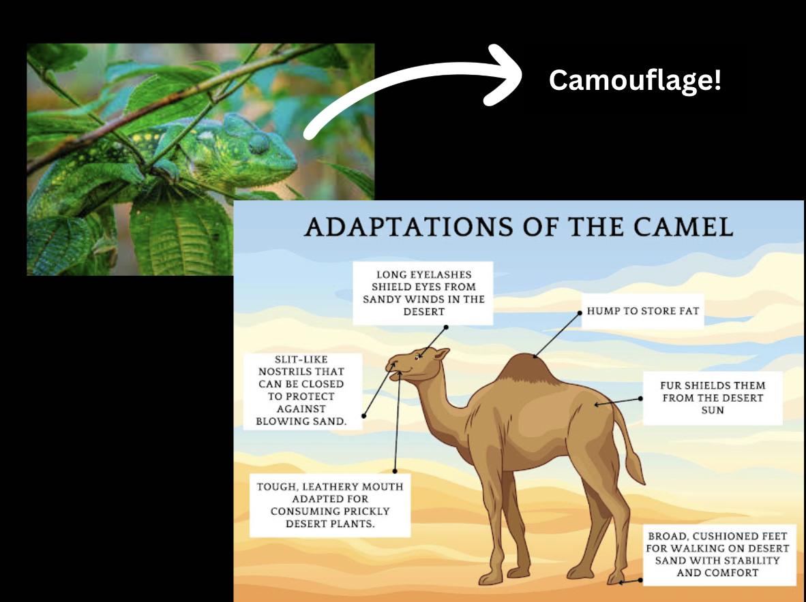

All around the world, animals have found ways to survive in extreme, unpredictable, or even dangerous environments. From the freezing Arctic to scorching deserts and the depths of the seas, each species has unique features that allow it to survive and reproduce successfully. These features known as adaptations are a result of evolution and natural selection over many generations.
Adaptations are categorized into three main categories: structural, behavioral, and physiological. They all show how creative and flexible nature can be in order to ensure survival.
They refer to the physical features of an animal body employed for survival:
These relate to the way an animal acts in relation to its environment and time:
These are inside body processes that enable an animal to be more adapted to its environment.
Conclusion: Adaptations are a powerful example of how living things can adjust to meet the demands of their environment. They allow animals to not just survive but to thrive in conditions where others can just struggle to exist. Whether it's a cactus, mouse dodging the desert sun, or a polar bear with thick fur, each adaptation shows us challenge, change, and survival. Studying these adaptations teaches us the diversity of life on this Earth and the incredible ways that nature solves problems.
Written by Aisha Alduhoori and Tamara Bračko